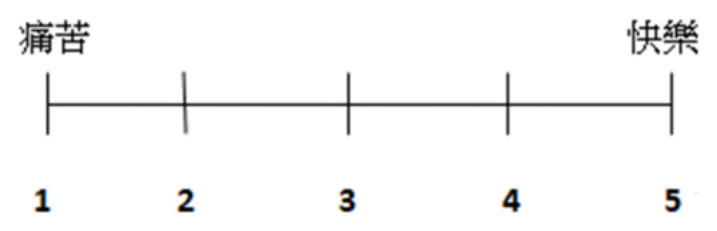

開卷有益 ／
社會工作師 ／ 社會工作研究方法 ／ 114 年第 2 次114 年第 2 次社會工作師社會工作研究方法試題與答案
這一頁是民國 114 年第 2 次社會工作師社會工作研究方法的整份歷屆試題，共 40 題，題目與標準答案出自考選部「國家考試試題及測驗式試題答案」開放資料，其中 40 題附有詳解。以下逐題列出題幹、選項與答案；要計時作答或記錄成績，請用線上練習。
考選部原始場次代碼：114100
線上作答這一科 →
全部 40 題
第 1 題
下列何種研究方法最不可能採用混合研究設計（mixed method）的邏輯來完成？
（A） 介入實驗設計方法（B） 行動研究法（C） 質性研究法（D） 調查研究法答案：（D）
詳解與考點 正解：本題答案為D。調查研究法（survey research）通常以結構化問卷蒐集可量化資料並作統計推論；相較於其他三種方法，依本題課程分類，調查研究法通常以結構化量化問卷為主要設計邏輯，相較之下被列為最不可能採混合研究設計者，故本題選 D；但調查仍可納入開放題、訪談追問或序列式混合設計，並非方法本質上單一、封閉。
A：介入實驗設計方法（如單案研究、準實驗設計）除了以量化指標評估介入成效外，常會輔以個案敘述、訪談等質性資料理解介入過程與當事人的主觀經驗，故容易採混合研究設計的邏輯。
B：行動研究法強調循環反覆及實務工作者與研究參與者共同參與，會同時運用觀察、訪談等質性方法與問卷、指標等量化方法，交互驗證行動的成效，是典型容易融入混合研究設計邏輯的研究取向。
C：質性研究法雖以質性資料蒐集與詮釋為主，但在實務操作上，研究者常輔以量化的描述性資料（如人口統計背景、次數分布）來補充脈絡資訊，或在多階段設計中銜接量化調查，故也具備採混合設計邏輯的空間。
本題考點：混合研究設計（Mixed Methods Design），指在同一研究中有意識地結合質性與量化資料蒐集與分析邏輯，以截長補短、相互驗證的研究取向；調查研究法（Survey Research），指以結構化問卷或訪問蒐集大樣本資料、進行統計描述與推論的量化研究方法。
第 2 題
在量化研究中，概念必須經過操作化，請問這麼做的主要目的為何？
（A） 利於文獻回顧的進行（B） 確定研究設計（C） 以具體化的測量指標反映概念（D） 釐清研究方向答案：（C）
詳解與考點 正解：操作化（operationalization）是量化研究將抽象概念轉換為可觀察、可測量的具體指標或變項的過程，例如將「社會支持」概念轉化為量表得分，目的在使抽象概念得以被實際測量、驗證與統計分析，這正是操作化最主要的目的，故本題選C。
A：文獻回顧是研究初期蒐集既有理論與研究成果的階段，通常發生在概念化與操作化之前，用以協助建立研究架構與變項定義，並非操作化本身的目的；操作化其實是在文獻回顧之後、蒐集資料之前的測量準備工作，兩者階段順序與功能不同。
B：研究設計（如採用實驗法、調查法或準實驗設計）決定的是整體研究架構與資料蒐集方式，操作化雖是研究設計中測量層次的一環，但其目的並非用以「確定」研究設計，而是在既定研究設計下具體化測量工具，兩者屬不同層次的工作，容易因同屬研究方法歷程而混淆。
D：釐清研究方向通常發生在研究問題與研究目的確立階段，屬於研究最初步的定調工作；操作化則是在研究方向大致確定後，將已界定的概念轉換為可測量指標的技術性步驟，並非用以決定研究方向。
本題考點：操作化（Operationalization），量化研究中將抽象概念轉換為可觀察測量指標的過程；概念化（Conceptualization）與操作化的階段區別，是研究方法科目常考的基本歷程辨析。
第 3 題
某大學教師想瞭解影響學生課堂參與的因素，他思考怎麼測量「參與」這個概念，下列那個選項不適合作為測量「參與」的變項？
（A） 學生發言次數（B） 學生是否準時出席（C） 學生眼神流露出的學習渴望（D） 學生所選擇座位離講台的距離答案：（C）
詳解與考點 正解：本題探討測量指標是否具備「可觀察、可客觀記錄」的操作化（operationalization）特性。發言次數（A）、是否準時出席（B）、座位與講台距離（D）都是可由觀察者依明確、客觀的標準加以記錄的行為指標，能夠重複觀察並取得一致的測量結果，屬於良好的操作型定義。C「學生眼神流露出的學習渴望」則涉及對學生內在心理狀態的主觀詮釋，不同觀察者對同一眼神可能有極不一致的判讀，缺乏客觀、可重複驗證的測量標準，不適合作為測量「參與」的變項，故本題選C。
A：學生發言次數是課堂參與最直接、最常用的行為型操作化指標之一，只需計數即可取得明確數值，具高度客觀性與可信度，適合作為測量變項。
B：學生是否準時出席屬於二分類別的行為紀錄，可由點名紀錄客觀取得，同樣具備明確、可重複驗證的測量標準，適合作為測量變項。
D：學生所選擇座位離講台的距離，雖然與「參與」的關聯性須靠理論支持（研究者假設坐得越前面代表參與度越高），但作為測量本身，距離可用實際量測或座位分區客觀記錄，測量過程仍具客觀性，適合作為測量變項；本題要挑的是「不適合」者，癥結在測量的客觀可行性，而非變項與概念的理論關聯強弱。
本題考點：操作化（Operationalization），指將抽象概念轉化為可觀察、可測量之具體指標的過程；測量的客觀性與信度（Reliability），要求指標能被不同觀察者依一致標準重複測得相近結果，主觀心理詮釋類指標通常不符合此要求。
第 4 題
某社會工作者整理社區健康講座的意見回饋，發現許多參加者反映活動地點不方便，而且持此意見的人對活動的滿意度偏低。因此該社會工作者就將下次活動地點改到大眾運輸車站附近，並收集意見回饋單，發現此舉提升了參加者滿意度。這整個邏輯過程符合下列那個選項？
（A） 只運用歸納法（B） 運用了歸納法和演繹法（C） 只運用演繹法（D） 只運用三段論法答案：（B）
詳解與考點 正解：社工從多筆具體的意見回饋觀察中，歸納出「地點不便的參加者，滿意度偏低」這項通則，這是由個別觀察歸納出一般性規律的過程，屬於歸納法（induction）；接著，社工依據這項通則，推論「若將地點改到交通便利之處（大眾運輸車站附近），應能提升滿意度」，並據此設計下一次活動、再以回饋單驗證假設是否成立，這是從一般原則推導出具體預測並加以檢驗的過程，屬於演繹法（deduction）。整個邏輯歷程先歸納出通則、再演繹出預測並驗證，兩者皆有運用，故選B。
A：若只運用歸納法，應止於「發現地點不便與滿意度偏低有關」這項從觀察中得出的通則，而不會進一步據此推論並設計新的介入措施來驗證假設；題幹後段社工已依通則推導出具體預測（改地點會提升滿意度）並檢驗，超出了單純歸納的範圍，故不只是歸納法。
C：若只運用演繹法，應是從既有的一般理論或原則出發、直接推導出具體假設並檢驗，但題幹一開始社工是先從具體的意見回饋資料中觀察、歸納出通則，而非預先援引既有理論，故不只是演繹法。
D：三段論法（syllogism）是演繹推理的一種形式邏輯表述方式（大前提、小前提、結論），題幹的推理過程並未以嚴謹的三段論形式呈現，且題幹同時包含歸納與演繹兩個階段，並非單純套用三段論法，故不選。
本題考點：歸納法（Induction），由具體觀察歸納出一般通則的推理方式；演繹法（Deduction），由一般原則推導出具體預測並加以驗證的推理方式；研究歷程中「歸納—演繹」循環，是社會工作研究方法中知識建構邏輯的基礎考點。
第 5 題
下列那一個研究提問最適合採用歸納邏輯的研究設計？
（A） 許多受暴者經常歷經一段受暴期間才會主動求助，是什麼因素影響他們的求助（B） 某機構的介入研究結果顯示，有接受家族治療服務的家庭，少年逃家事件減少（C） 從行政資料來分析，接受多元服務愈多的家庭，家庭功能有明顯的改進（D） 經過認知教育後，有簽署預立遺囑的人比沒有簽署的人死亡焦慮的程度較低答案：（A）
詳解與考點 正解：本題問哪個研究提問最適合採用歸納邏輯（inductive logic）的研究設計。歸納邏輯是由具體觀察、個案資料出發，透過歸納整理找出型態或理論，通常用於缺乏既有理論架構、開放探索性的問題。A「是什麼因素影響他們的求助」屬開放式探索提問，未預設特定自變項與依變項的因果關係，需要研究者從受暴者的求助歷程中歸納出可能影響求助的因素，符合歸納邏輯取向，故選A。
B：B描述「有接受家族治療服務的家庭，少年逃家事件減少」，已先有「家族治療介入」與「逃家事件減少」兩變項間的因果假設，再以資料驗證，屬於演繹邏輯（先有理論或假設、後驗證）的研究設計，不是歸納。
C：C描述「接受多元服務愈多的家庭，家庭功能有明顯的改進」，同樣是先預設「服務量」與「家庭功能」之間存在正向關係，再用行政資料驗證此假設，屬演繹取向的相關性驗證，非歸納。
D：D描述「有簽署預立遺囑的人比沒有簽署的人死亡焦慮的程度較低」，是預先假設「簽署預立遺囑」與「死亡焦慮程度」之間有差異，再以比較兩組的方式驗證假設，同屬演繹邏輯的假設檢定設計，非歸納。
本題考點：歸納邏輯（Inductive Logic），指由具體觀察、個案資料出發，逐步歸納出概念或理論的研究取向，適用於探索性、缺乏既有理論的提問；演繹邏輯（Deductive Logic），指先有理論或假設、再蒐集資料驗證，是與歸納相對照的研究邏輯區分依據。
第 6 題
有關因果關係的陳述，下列何者正確？
（A） A 與B 二因素沒有關連性，但可能存有因果關係（B） A 因素發生在B 因素前，因此可以判斷A 因素導致B 因素的結果（C） 二因素的因果關係無法直接觀察獲知（D） A 因素與B 因素具有共變關係，因此可判斷此二因素具有因果關係答案：（C）
詳解與考點 正解：因果關係（causality）在研究方法論上是一種無法被直接觀察獲知、只能透過間接證據推論而得的關係，判斷兩變項間是否存在因果關係，通常需同時符合三項條件：兩者具有共變關係（covariation）、原因在時間順序上發生於結果之前（time order），以及排除其他可能造成此共變的替代解釋（non-spuriousness，即排除虛假關係）；即便三項條件皆滿足，研究者仍是「推論」而非「直接觀察」到因果關係本身，故選 C。
A：若 A 與 B 兩因素之間完全沒有共變（統計上不相關），依因果推論的基本邏輯，共變是因果關係成立的必要條件之一，兩者「沒有關連性」通常即可排除兩者間存在因果關係的可能，選項卻稱「可能存有因果關係」，與此基本原則矛盾。
B：A 因素發生在 B 因素之前，僅滿足時間順序這一項條件，但時間先後只是因果關係成立的必要條件之一，並非充分條件——仍須進一步確認兩者具有共變關係，且排除其他共同原因（虛假關係）的可能，才能判斷 A 導致 B，選項僅憑時間順序就下因果結論，條件不足。
D：A 與 B 具有共變關係，同樣僅滿足共變這一項必要條件，但共變（相關）不等於因果，兩者可能同受第三變項影響而呈現虛假相關，選項僅憑共變就判斷具有因果關係，同樣忽略了時間順序與排除虛假關係兩項條件，論證不足。
本題考點：因果關係的判斷條件（criteria for causality），須同時具備共變關係、時間先後順序、排除虛假關係三項條件，且因果關係本身無法被直接觀察，只能透過符合上述條件的間接證據加以推論，是研究方法學中辨析相關與因果差異的基礎概念。
第 7 題
研究顯示工作壓力會影響生活品質，但如果有好的支持系統，工作壓力對生活品質的影響即會降低。請問支持系統扮演的機制是？
（A） 中介機制（B） 控制機制（C） 曲解機制（D） 調節機制答案：（D）
詳解與考點 正解：題述指出，工作壓力對生活品質有負向影響，但當支持系統存在時，這個「工作壓力→生活品質」的影響效果會被減弱，也就是第三變項（支持系統）改變了自變項對依變項效果的強弱，這正是調節變項（moderator）扮演的角色，即調節機制，故選D。
A：中介機制（mediator）指的是第三變項在自變項與依變項之間扮演傳遞路徑的角色，用來解釋「自變項為什麼／透過什麼途徑」影響依變項（工作壓力→中介變項→生活品質），本題描述的是支持系統改變影響的強弱程度，而非說明工作壓力如何透過支持系統去影響生活品質，兩者概念相近卻不同，是最容易混淆的一對選項。
B：控制機制通常指統計分析中被固定、排除干擾以便單純觀察自變項與依變項關係的變項，其作用是排除干擾而非改變效果的強弱，與題述「降低工作壓力對生活品質的影響」性質不符。
C：曲解機制並非統計學上的標準機制類型，題述也沒有資料被扭曲、誤解的意涵，屬於混淆用詞的誘答選項。
本題考點：調節變項／調節機制（moderator），指改變自變項對依變項效果強弱或方向的第三變項；中介變項／中介機制（mediator），指解釋自變項如何透過中間路徑影響依變項的第三變項，二者的區辨是研究方法考科的常見考點。
第 8 題
第三變項（Z）的存在會影響我們對於X→Y 因果關係的解釋，下列對於Z 變項屬性的敘述何者錯誤？
（A） Z 可能是中介變項（B） Z 可能是調節變項（C） Z 可能是控制變項（D） Z 可能是內衍變項答案：（D）
詳解與考點 正解：本題依第三變項對 X→Y 因果解釋所扮演的機制分類。中介變項（mediator）說明 X 如何透過 Z 影響 Y；調節變項（moderator）說明效果隨 Z 改變；控制變項（control variable）用於排除干擾。「內衍變項」則是路徑分析或結構方程模型中，依變項是否受模型內其他變項解釋的位置分類，不與前三者平行，故本題選 D；但在 X→Z→Y 中，Z 可同時是中介變項與受 X 解釋的內衍變項。
A：中介變項是指 Z 位於 X 與 Y 之間的因果鏈上（X→Z→Y），用以解釋 X 為何、如何影響 Y，是描述第三變項介入因果解釋的常見屬性之一，敘述正確。
B：調節變項是指 Z 會改變 X 對 Y 的影響強度或方向，同樣是第三變項可能扮演的正確角色。
C：控制變項是指研究者為排除 Z 對 X、Y 關係的干擾，在統計上加以控制以獲得 X 對 Y 較純淨的效果估計，也是第三變項常見且正確的屬性。
本題考點：第三變項在因果推論中的角色，包含中介變項（mediator）、調節變項（moderator）、控制變項（control variable）三種描述其如何介入 X→Y 關係的方法論概念；內衍變項與外衍變項（endogenous/exogenous variable），是結構方程模型中依變項是否被模型內其他變項解釋所做的分類，屬於不同層次的概念。
第 9 題
社會工作研究者在擬定研究問題之後，接著即須針對研究問題中所欲探討之概念進行瞭解，此一過程屬於下列何者？
（A） 概念化（conceptualization）（B） 理論化（theoreticalization）（C） 概推化（generalization）（D） 操作化（operationalization）答案：（A）
詳解與考點 正解：研究者擬定研究問題後，須先針對問題中所涉及的抽象概念加以界定、釐清其意涵與範圍，這個把抽象概念說清楚「是什麼」的過程稱為概念化（conceptualization），是研究設計中先於測量的必要步驟，故選A。
B：理論化（theoreticalization）並非研究方法學中常用的正式步驟名稱，題目也未描述「建構或檢驗理論命題」的過程，僅是要求釐清概念意涵，與理論化無關，屬混淆字面相似的誘答。
C：概推化（generalization）指的是將樣本研究結果推論至母群體的能力，屬於研究結論外部效度的問題，發生在資料蒐集與分析之後，而非擬定研究問題後緊接著要做的第一件事，時序與性質皆不符。
D：操作化（operationalization）是在概念化之後，把已經界定清楚的抽象概念轉換為可觀察、可測量之具體指標（如量表題項）的步驟；本題描述的是「瞭解概念」本身，尚未進入設計測量工具的階段，因此屬於概念化而非操作化，兩者順序不可顛倒。
本題考點：概念化（conceptualization），指釐清研究問題中抽象概念之意涵與範圍的過程；操作化（operationalization），指將已界定的概念轉換為可測量指標的後續步驟；兩者是研究設計中先後銜接、不可跳過的階段。
第 10 題
關於「逐字稿」需要記錄的內容，下列何者錯誤？
（A） 文字稿（B） 研究者的反思筆記（C） 訪談當時的情境描述（D） 研究者的提問答案：（B）
詳解與考點 正解：逐字稿的功能是忠實呈現訪談過程的實際內容，因此應包含訪談的文字內容、研究者的提問，以及訪談當時的情境描述（如語氣、停頓、非語言反應等現場紀錄），這些都是訪談當下發生的資料；但研究者的反思筆記是研究者在訪談後另行撰寫、屬個人詮釋與備忘性質的分析資料，並非訪談逐字紀錄本身應涵蓋的內容，故本題選B。
A：文字稿即訪談對話內容的逐字轉錄，是逐字稿最核心、基本的組成部分，敘述正確。
C：訪談當時的情境描述（如訪談地點、受訪者情緒反應、非語言線索等）有助於後續資料分析時還原脈絡，屬逐字稿應記錄的內容，敘述正確。
D：研究者的提問是訪談互動不可或缺的一部分，唯有完整記錄提問與回應的對應關係，逐字稿才具備分析價值，敘述正確。
本題考點：質性研究中逐字稿（Verbatim Transcript）的組成要素，須與研究者事後撰寫的反思筆記或備忘錄區分——前者是原始資料的忠實呈現，後者是研究者的詮釋性紀錄，兩者在質性資料處理流程中角色不同。
第 11 題
某生進行一項有關「高齡者參與社團活動類型與生活幸福感」之研究，請問社團活動類型是屬於何種測量尺度？
（A） 名目尺度（Nominal Scale）（B） 順序尺度（Ordinal Scale）（C） 區間尺度（Interval Scale）（D） 比率尺度（Ratio Scale）答案：（A）
詳解與考點 正解：本題問「社團活動類型」屬何種測量尺度。社團活動類型係將受訪者所參與的社團分為不同類別（如運動類、藝文類、宗教類、志工類等），各類別間僅有「不同」之別，沒有大小、順序或距離關係，屬於名目尺度（nominal scale），故選A。
B：順序尺度指類別之間具有等級高低或排序關係（如滿意度分為非常滿意、滿意、普通、不滿意），但社團活動類型只是分類名稱，彼此間並無高低順序可言，故不符。
C：區間尺度指數值有相等間距、可比較差距大小，但無絕對零點，社團活動類型並非數值資料，無從計算間距，故不符。
D：比率尺度指具有相等間距且有絕對零點、可計算倍數關係的數值資料（如年齡、所得、參與次數），社團活動類型同樣不是數值變項，無法計算倍數，故不符。
本題考點：測量尺度（Level of Measurement），依序分為名目尺度（類別區分）、順序尺度（等級排序）、區間尺度（等距無絕對零點）、比率尺度（等距且有絕對零點），是研究方法中判斷變項屬性、進而選擇適當統計方法的基礎概念。
第 12 題
在設計問卷時，下圖係指何種量表？

（A） Likert 量表法（B） 語意差別量表法（C） Guttman 量表法（D） Thurstone 量表法答案：（B）
詳解與考點 正解：本題附圖為問卷設計中的量表示意圖，其官方認定答案為B語意差別量表法（semantic differential scale，又稱語意分析量表）。此類量表的典型呈現方式，是在一組意義相反的形容詞（例如「好—壞」「強—弱」）兩端之間，設置數個等距的評定級距，讓受訪者依主觀感受在兩極之間圈選對應位置。這種「對立形容詞兩端＋等距圈選」的圖示特徵，與Likert量表法逐題附上同一組同意程度選項、Guttman量表法呈現由弱到強的累積單一向度陳述句、Thurstone量表法呈現一系列附有量化權重的陳述句，形式上均不相同，故本題選B。
A：Likert量表法是以一組陳述句（如「我對此服務感到滿意」）搭配「非常同意～非常不同意」的同意程度選項供受訪者勾選，圖形特徵是逐題附上同一組同意程度選項，而非以對立形容詞兩端呈現，與語意差別量表法的形式不同。
C：Guttman量表法（累積量表）的特徵是一系列由弱到強、具累積性與單一向度的陳述句，受訪者同意某一較強烈的陳述時，理論上也會同意所有較弱的陳述，用以檢驗題項是否構成單一累積結構，而非以對立形容詞評定，與語意差別量表法的形式不同。
D：Thurstone量表法（等距量表）是先由專家群對一組陳述句進行量化評定、篩選出間距相等且具代表性的題項，再讓受訪者勾選同意的陳述以計算量表分數，特徵是一系列附有量化權重的陳述句，而非以對立形容詞兩端評定，與語意差別量表法的形式不同。
本題考點：語意差別量表法（Semantic Differential Scale），以對立形容詞兩端設定評定級距測量受訪者主觀感受的量表設計；量表類型辨識，是問卷設計考題中常以圖示考驗學生區辨Likert、Guttman、Thurstone與語意差別量表法作答形式差異的重點。
第 13 題
下列何者不是抽樣過程中的誤差來源？
（A） 抽樣架構（B） 樣本數（C） 抽樣方法（D） 分析單位答案：（D）
詳解與考點 正解：若將題目用語理解為抽樣過程可能造成的誤差或偏誤，抽樣架構（sampling frame）的涵蓋情形、樣本數（sample size）與抽樣方法都會影響樣本推論。嚴格而言，抽樣誤差（sampling error）是機率抽樣隨機波動造成的估計落差；抽樣架構不完整與非隨機選樣通常分別屬涵蓋偏誤及選樣偏誤。D「分析單位」（unit of analysis）指研究者界定觀察與分析的層次（例如個人、家庭、團體、機構），是研究設計階段的概念界定問題，並非抽樣過程本身產生誤差的來源，故本題選 D。
A：抽樣架構若涵蓋不足、涵蓋過度或名冊重複，會造成涵蓋偏誤，屬抽樣過程可能產生的偏誤，故非答案。
B：樣本數大小與抽樣誤差成反比關係，樣本數愈大、標準誤愈小、推論愈精確，樣本數過小則抽樣誤差擴大，是統計學上明確界定的誤差來源之一。
C：抽樣方法若缺乏隨機性，例如便利抽樣、雪球抽樣，可能造成選樣偏誤並影響代表性，故非答案。
本題考點：抽樣過程的隨機抽樣誤差、涵蓋偏誤與選樣偏誤須加以區分；分析單位（Unit of Analysis），指研究設計中界定觀察與資料蒐集層次的概念，與抽樣誤差是不同範疇的問題。
第 14 題
下列何種抽樣方法必須先完成研究母群體重要特徵矩陣表及其比例？
（A） 系統抽樣（systematic sampling）（B） 叢集抽樣（cluster sampling）（C） 配額抽樣（quota sampling）（D） 滾雪球抽樣（snowball sampling）答案：（C）
詳解與考點 正解：配額抽樣（quota sampling）是一種非機率抽樣方法，其操作程序須先依研究母群體的重要特徵（如性別、年齡、教育程度等）建立特徵矩陣表，並依母群體中各類別所占的比例訂出各類別應抽取的樣本配額，再由研究者依配額選取符合條件的樣本，故本題要求「必須先完成研究母群體重要特徵矩陣表及其比例」者為配額抽樣，選C。
A：系統抽樣是機率抽樣方法，做法是先將母群體依固定間距（抽樣間隔）排列，再從第一個隨機起點開始，每隔固定間距抽取一個樣本，僅需知道母群體總數與所需樣本數以計算抽樣間距，不需要事先建立特徵矩陣表。
B：叢集抽樣同屬機率抽樣，做法是將母群體先劃分為若干「叢集」（如以地理區域或既有團體為單位），再以叢集為單位進行隨機抽樣，抽中的叢集內成員全部（或再抽樣）納入樣本，抽樣依據的是叢集的劃分而非母群體特徵比例矩陣。
D：滾雪球抽樣是非機率抽樣，常用於難以掌握母群體名單的隱蔽或特殊群體研究，做法是先找到少數符合條件的受訪者，再請其介紹其他符合條件者，樣本是透過人際網絡滾動累積而成，並不依賴事先建立的母群體特徵比例矩陣。
本題考點：配額抽樣（Quota Sampling），一種依母群體重要特徵比例先設定樣本配額、再選取樣本的非機率抽樣方法；與系統抽樣、叢集抽樣（機率抽樣）及滾雪球抽樣（非機率抽樣、依人際網絡滾動）在抽樣邏輯上的區分，是本題比較不同抽樣方法操作邏輯的核心考點。
第 15 題
對於焦點團體方法的敘述，下列何者錯誤？
（A） 焦點團體是一種質性方法，無需考慮團體成員互動的影響（B） 焦點團體較常使用立意抽樣法（C） 焦點團體所蒐集的資料分析結果，較難以用於統計的推論（D） 焦點團體通常需要一個私密且舒適的環境，就指定的主題進行討論答案：（A）
詳解與考點 正解：焦點團體法（focus group）的核心價值恰恰在於刻意運用團體成員互動——透過參與者彼此對話、激盪、甚至意見交鋒，引導出個人訪談難以獲得的集體觀點與資料深度，因此團體成員互動不僅需要被考慮，反而是這個方法設計的關鍵機制；A敘述「無需考慮團體成員互動的影響」與焦點團體法的方法論本質完全相反，故為錯誤敘述，本題選A。
B：焦點團體因聚焦於特定議題與特定經驗族群，通常會依研究目的選取具代表性或特殊經驗的參與者，而非隨機抽樣，較常使用立意抽樣（purposive sampling），此敘述正確。
C：焦點團體所得資料為參與者互動下產生的質性語言資料，樣本數少且非隨機取樣，分析結果不具母體代表性，因此難以據以進行統計上的推論，此敘述正確。
D：為使參與者能自在表達真實想法、減少受他人窺視或干擾的顧慮，焦點團體通常安排在私密且舒適的空間進行，圍繞指定主題引導討論，此敘述正確。
本題考點：焦點團體法（Focus Group），一種以團體成員互動為核心機制蒐集質性資料的研究方法，常搭配立意抽樣，其資料性質不適於統計推論，是質性研究方法中常考的方法論辨析重點。
第 16 題
關於網路調查方法的敘述，下列何者錯誤？
（A） 電子郵件調查和網頁調查都屬於網路調查，兩者皆由受訪者自行填答，問卷設計和抽樣方法也相同（B） 網路調查的限制之一是來自於網路人口的定義不明，故難以界定母體範圍（C） 涵蓋率不足是網路調查方法的主要問題之一（D） 較不會產生社會期許（social desirability）效應答案：（A）
詳解與考點 正解：本題答案為A。電子郵件調查與網頁調查雖然都屬於廣義的網路調查，且都由受訪者自行填答，但兩者在問卷設計與抽樣方法上並不相同：電子郵件調查通常需先取得受訪者的電子郵件名單、以固定格式寄送問卷，抽樣依賴既有名單框架；網頁調查則可運用超連結、跳題邏輯等網頁互動設計，招募方式也可能透過網站彈出視窗、社群連結等非名單式管道進行，兩者在技術限制與抽樣邏輯上差異甚大。A將兩者的問卷設計與抽樣方法都說成相同，是錯誤敘述，為本題答案。
B：網路人口（母體）的定義本身就不明確，並非所有母體成員都能被界定為網路使用者且被涵蓋在抽樣框架內，這確實是網路調查最根本的限制之一，敘述正確，故不選。
C：涵蓋率不足（coverage error）是網路調查的主要問題，因為並非所有目標母體成員都有網路使用能力或意願，導致樣本結構偏誤，敘述正確，故不選。
D：由於網路調查多為自填、無訪員在場，受訪者較不受訪員在場壓力影響，對敏感或社會不贊許的題目較能誠實作答，因此社會期許效應通常較訪員親自訪問為低，敘述正確，故不選。
本題考點：網路調查（web survey）的類型與限制，包括電子郵件調查與網頁調查在問卷設計、抽樣邏輯上的差異；涵蓋率誤差（coverage error）與母體界定困難；自填式調查較能降低社會期許效應（social desirability bias）的優點。
第 17 題
下列那一種資料蒐集方法最適合運用於研究一個社會福利機構組織文化的形成？
（A） 問卷調查法（B） 郵寄問卷法（C） 團體施測法（D） 深度訪談法答案：（D）
詳解與考點 正解：組織文化的「形成過程」涉及成員如何詮釋、建構共同信念與行為模式，是深層、脈絡性且動態發展的質性議題，須透過與關鍵成員一對一深入對話，方能挖掘其內在意義與歷史脈絡，故最適合採用深度訪談法，選D。
A：問卷調查法屬結構化量化工具，僅能蒐集事先設計好的封閉式或量表式答案，難以捕捉組織文化形成過程中複雜、非預設的脈絡與意義，不適合本研究目的。
B：郵寄問卷法是問卷調查法的一種施測方式，同樣受限於結構化題項與量化資料形式，且施測者與受訪者無互動機會，更難深入了解組織文化形成的動態歷程，不適合。
C：團體施測法是同時對多人施測結構化工具（如問卷、量表）以提高施測效率的做法，本質仍是量化資料蒐集，無法呈現個別成員對組織文化形成的深度詮釋，不適合。
本題考點：質性研究資料蒐集方法，深度訪談法適合探討深層、脈絡性、意義建構類議題；組織文化研究，強調文化是成員互動中逐漸形成的共享意義系統，需透過質性方法貼近其形成歷程。
第 18 題
下列那一種研究設計的內在效度較差？
（A） 多元前測的不對等比較組設計（B） 交換重複測驗的比較組設計（C） 多元時間序列設計（D） 單一個案AB 設計答案：（D）
詳解與考點 正解：本題比較四種研究設計的內在效度高低。單一個案 AB 設計只有基線期與介入期兩個階段，缺乏對照組，也沒有撤回、交替或跨階段複現介入效果，因此較難排除歷史（同時期發生的其他事件）、成熟（案主自然隨時間產生的變化）等干擾因素對結果的影響，是四者之中控制力最弱、內在效度最差的設計，故選 D。
A：多元前測的不對等比較組設計雖然實驗組與對照組並非隨機分派（不對等），但透過多次前測可以估計兩組原本的成長趨勢是否一致，藉此排除部分成熟與迴歸效應的威脅，內在效度優於單純的單一個案設計。
B：交換重複測驗的比較組設計讓兩組輪流接受介入與對照條件、並重複測量，等於讓每組都同時扮演實驗組與對照組，可以互相抵銷組間先天差異與歷史事件的干擾，控制力較強。
C：多元時間序列設計是在介入前後對同一組（或加上對照組）進行多次重複測量，能清楚描繪出介入前的穩定趨勢與介入後的變化模式，足以排除單純巧合或短期波動的解釋，內在效度也優於單一個案 AB 設計。
本題考點：內在效度（Internal Validity），指研究設計排除歷史、成熟、迴歸等競爭性解釋、確認自變項才是造成依變項變化原因的程度；準實驗設計（Quasi-experimental Design）的比較，設計中是否具備對照組、重複測量或時間序列愈完整，內在效度通常愈高。
第 19 題
某社會工作者觀察到機構中長輩普遍有下肢無力的現象，因此推論其他安養機構長輩也有類似情形，這是下列何種效度？
（A） 環境效度（B） 生態效度（C） 外在效度（D） 內在效度答案：（C）
詳解與考點 正解：本題描述研究者將單一機構觀察所得的結果，推論類推至「其他安養機構」的長輩身上，這是研究結果能否從研究樣本或情境類推到其他母體、情境或時間的問題，屬於外在效度（external validity）的範疇，故本題選C。外在效度關切的正是研究發現的可類推性（generalizability）。
A：環境效度並非效度分類中普遍使用的標準術語，容易與生態效度混淆；本題著重的是「能否類推到其他機構」而非特定情境本身的真實性描述，不符合本題重點。
B：生態效度（ecological validity）指研究情境或測量方式與真實生活情境的相似程度，關切的是研究設計本身是否貼近自然情境、而非能否將結果類推至其他母體或場域，與本題「推論到其他安養機構」的類推問題不同，是容易與外在效度混淆的誘答。
D：內在效度（internal validity）關切研究中自變項與依變項之間的因果關係是否可信、有無混淆變項干擾，是研究設計嚴謹度的問題，與本題「將觀察結果推論到其他機構」的類推性議題無關。
本題考點：外在效度（External Validity），指研究結果能否類推到其他母體、情境或時間的程度；內在效度與生態效度則分別關切因果推論的可信度與研究情境的真實性，三者是研究方法中常互相對照出題的效度概念。
第 20 題
關於內在效度之敘述，下列何者正確？
（A） 自變項之顯著改變，唯獨由依變項所造成的（B） 只有在探討因果關係時才需要注意（C） 除了依變項（如處遇結果）以外，研究者控制其他影響因素之程度（D） 在控制其他變項的情況下，自變項對依變項之影響仍然顯著答案：（D）
詳解與考點 正解：官方答案為 D。內在效度（internal validity）關心研究能否排除競爭解釋，支持自變項造成依變項變化的因果推論；D 所述在控制其他變項後，自變項對依變項的影響仍顯著，呈現本題判準，故選 D。惟顯著性本身不等於因果，仍須由研究設計建立時序與控制混淆。
A：「自變項之顯著改變，唯獨由依變項所造成的」把自變項與依變項的因果方向說反了——內在效度所關心的是依變項的顯著改變是否唯獨由自變項所造成，而非反過來由依變項造成自變項的改變，此敘述倒果為因，故不選。
B：內在效度的核心正是因果推論能否排除競爭解釋，因此「只有在探討因果關係時才需要注意」並非僅因用語絕對就必然錯誤。依官方答案，本題以 D 為較完整的操作性敘述而不選 B；若教材未另作限定，B 亦具有成立空間。
C：「除了依變項（如處遇結果）以外，研究者控制其他影響因素之程度」僅描述了控制其他變項這個操作動作本身，卻沒有進一步指出控制後自變項對依變項的影響是否仍然成立，只停留在控制的程度而非驗證因果關係是否依然顯著，敘述並不完整，未能精確掌握內在效度的核心定義，故不選。
本題考點：內在效度（Internal Validity），指研究設計排除干擾因素後，能確信自變項對依變項的影響為真實因果關係的程度；與外在效度（研究結果可推論至其他母體或情境的程度）相對，是研究方法章節效度分類的常考辨析點。
第 21 題
在問卷調查中詢問「假如將社區中居民對社區參與程度區分為積極者、一般者、消極者、抗拒者，你認為你是屬於那一類型？」是要瞭解下列何種內容？
（A） 事實（B） 能力（C） 行為（D） 意見答案：（D）
詳解與考點 正解：題目要求受訪者依「積極者、一般者、消極者、抗拒者」四類自行歸類，判斷自己屬於哪一種社區參與程度的類型，這是請受訪者對自身狀態表達主觀的看法、態度或評價，而非陳述客觀可查證的事實，屬於問卷測量內容中的「意見」（opinion）題，故本題選 D。
A：事實題詢問的是可被客觀查證、不因受訪者主觀判斷而異的具體資訊，例如年齡、居住地、是否參加過某次社區活動等，與本題請受訪者主觀「自認為」屬於哪一類型的性質不同。
B：能力題測量受訪者對特定知識或技能的了解程度或表現水準，例如是否知道社區公共事務的相關規定，與本題所問「自我歸類的參與程度類型」無關。
C：行為題詢問受訪者實際做過或正在做的具體行動，例如是否曾出席社區會議、參與社區活動的頻率，屬客觀可回溯的行為紀錄；本題問的則是受訪者對自己參與「程度類型」的主觀認定，並非具體行為紀錄本身，是容易與行為題混淆的選項，但關鍵差異在於本題問的是自我評價而非行為事實。
本題考點：問卷測量內容類型（Types of Survey Content），問卷題目依測量內容可分為事實、能力、行為、意見等類型，其中意見題測量受訪者主觀的態度、看法或自我評價，是研究方法科目中問卷設計的基礎考點。
第 22 題
下列那一個問項的設計有複合詢問（double barreled）的問題？
（A） 你希望自己富有並出名嗎（B） 你是贊成或反對槍支管控立法（C） 你昨天有吃早餐嗎（D） 你去年看醫生幾次答案：（A）
詳解與考點 正解：複合詢問（double-barreled question）指一個問項實際上包含兩個（或以上）不同的概念或訴求，受訪者可能對其中一個贊成、另一個反對，卻只能給出單一答案，導致測量失真。A「你希望自己富有並出名嗎」同時問了「富有」與「出名」兩件不同的事——受訪者可能希望富有卻不在乎出名，或希望出名卻不在意財富，兩者判斷可能不一致，卻被迫以同一答案回應，是典型的複合詢問，故本題選A。
B：「你是贊成或反對槍支管控立法」容易被誤認為複合詢問，因為它列出「贊成」與「反對」兩個選項；但這兩者其實是同一個問題（是否贊成槍支管控立法）的一組互斥答項，並非同時詢問兩個不同概念，受訪者仍只需針對「槍支管控立法」這單一議題表態，故不構成複合詢問。
C、D：兩者皆僅針對單一、明確的事實或行為提問——C僅問「昨天是否吃早餐」，D僅問「去年看醫生的次數」，皆不涉及同時綁定兩個不同概念的情形，受訪者能就單一問題明確作答，故無複合詢問的問題。
本題考點：複合詢問（Double-Barreled Question），指問卷題目同時包含兩個或以上不同概念、致使受訪者無法用單一答案準確回應的設計缺失，是問卷設計效度的重要檢核項目。
第 23 題
有關郵寄問卷法的敘述，下列何者正確？
（A） 郵寄問卷需附回郵信封郵資，比面訪成本較高（B） 郵寄問卷較能保有受訪者的隱私（C） 郵寄問卷不能用金錢或禮物給予參與者誘因（D） 郵寄問卷因為不受填答時間的限制，所以題項數目愈多愈好答案：（B）
詳解與考點 正解：郵寄問卷由受訪者在無研究者在場的情況下自行填答，不需面對面回答較私密或敏感的問題，相較於面訪或電訪，較能保有受訪者的隱私，此敘述正確，故選B。
A：郵寄問卷雖需附回郵信封及郵資等成本，但整體而言其人力成本（毋須派員實地訪問）通常遠低於面訪，並非「比面訪成本較高」，此敘述與郵寄問卷成本較低的一般特性相反，為錯誤選項。
C：郵寄問卷的回收率普遍偏低，為提高受訪者填答與回覆的意願，研究者常會使用金錢或禮物作為誘因以提升回收率，並非「不能」使用金錢或禮物作誘因，此敘述錯誤。
D：郵寄問卷雖不受填答時間之限制，但題項數目過多會增加受訪者的填答負擔，反而降低回收意願與回收率，並非「題項愈多愈好」，此敘述與問卷設計應力求精簡的原則相反，為錯誤選項。
本題考點：郵寄問卷法（mail survey）之特性，包括隱私保有程度、成本結構、誘因使用與問卷長度對回收率之影響，為調查研究法中不同資料蒐集方式比較的基本考點。
第 24 題
關於深度訪談法，下列敘述何者正確？
（A） 需要按照問卷上的每個問題進行訪談（B） 不可以透露研究者的背景或興趣（C） 研究者和被研究者是一種夥伴關係（D） 與日常生活閒談沒有太大差異答案：（C）
詳解與考點 正解：深度訪談法（in-depth interview）強調研究者與被研究者之間是平等互惠的夥伴關係，雙方共同在互動中建構出對經驗與意義的理解，而非研究者高高在上單向蒐集資料，故選 C。
A：深度訪談通常採半結構式或非結構式進行，研究者事先準備的是訪談大綱而非逐字必須照念的固定問卷，過程中須依受訪者的回答彈性追問、深入探索，並非按照問卷上每個問題逐一唸出，敘述錯誤。
B：為了建立信任關係、讓受訪者願意坦誠分享經驗，研究者往往需要適度透露自己的背景、身份或研究興趣，這有助於降低受訪者的疑慮與提升訪談品質，並非不可以透露，敘述錯誤。
D：深度訪談雖然形式上像對話，但具有明確的研究目的、經過設計的訪談大綱與追問技巧，並會系統性地記錄與分析內容，這與沒有目的、隨興進行的日常閒談有本質上的差異，敘述錯誤。
本題考點：深度訪談法（In-depth Interview），質性研究中透過與受訪者深入互動蒐集經驗性資料的方法；研究者與受訪者的夥伴關係，強調兩者共同建構意義而非上對下的資料蒐集，是質性研究方法論的核心精神。
第 25 題
在量化研究的面對面結構式訪談中，如果受訪者偏離主題答非所問時，研究者應如何進行最合適？
（A） 採用不同說法重新講述一次研究目的（B） 改變訪談問題的表達方式（C） 提供受訪者正確回答的指引（D） 重新陳述一次原來的問題答案：（D）
詳解與考點 正解：本題考量化研究中結構式訪談的標準化原則。結構式訪談要求對每位受訪者以完全相同的方式呈現題目與用詞，以維護測量的信度與跨受訪者資料的可比較性；當受訪者偏離主題、答非所問時，訪談者最合適的處理方式是重新陳述一次原來的問題，亦即完全依照原始題目的字句再唸一次，不更動用詞、不額外解釋，讓受訪者在相同的刺激條件下重新作答，故本題選 D。
A：以不同說法重新講述研究目的，等於是在訪談過程中額外提供研究目的的說明或提示，這會改變原本題目的呈現方式、可能引導受訪者的回答方向，違反結構式訪談要求對所有受訪者呈現相同刺激的標準化原則。
B：改變訪談問題的表達方式，看似是為了幫助受訪者理解，但實質上等於用不同的措辭詢問同一個問題，這會使不同受訪者面對的題目用詞不一致，破壞結構式訪談要求的一致性，是最容易被誤認為彈性應對而誤選的做法。
C：提供受訪者正確回答的指引，等同於訪談者主動暗示或引導受訪者該如何作答，這種介入會直接引入訪談者偏誤，污染資料的客觀性，與結構式訪談要求訪談者保持中立、避免影響受訪者作答的原則相違背。
本題考點：結構式訪談的標準化原則（standardization in structured interview），要求對所有受訪者以相同方式呈現題目與用詞以維護信度；當受訪者偏題時，正確做法是原句重述而非改述、解釋或引導，以避免訪談者效應介入。
第 26 題
關於質性研究的重要特徵或目的，下列敘述何者正確？
（A） 在控制的情境下收集資料（B） 研究者本身就是最主要的研究工具（C） 資料的分析有標準的程序可循（D） 強調樣本要有母體的代表性答案：（B）
詳解與考點 正解：質性研究強調研究者親自進入研究情境，透過觀察、訪談、參與等方式蒐集與詮釋資料，研究者的敏感度、詮釋能力與互動技巧直接影響資料的品質與意義的建構，因此研究者本身即是質性研究最主要的研究工具，故選B。
A：質性研究通常在自然情境而非人為控制的情境下蒐集資料，強調保留現象的真實脈絡；「控制情境蒐集資料」是實驗研究的典型特徵，與質性研究常重視自然情境的取向不同；量化研究亦可採自然情境調查或次級資料分析，不能一概等同控制情境。
C：質性研究的資料分析強調彈性與詮釋性、依研究情境與資料特性彈性調整，並無放諸四海皆準的標準化固定程序；「有標準程序可循」是量化統計分析的特徵，此為誘答。
D：強調樣本要有母體代表性、可推論母體，是量化研究抽樣的核心要求；質性研究多採立意抽樣或滾雪球抽樣，樣本小且不追求統計上的代表性，而重視資訊豐富的個案，此為誘答。
本題考點：質性研究方法論的核心特徵，包括自然情境蒐集資料、研究者作為研究工具、彈性詮釋性的資料分析、立意抽樣而非母體代表性抽樣，是與量化研究方法對照的常考重點。
第 27 題
關於單案研究設計的敘述，下列何者錯誤？
（A） 所研究的案主系統不一定是個案本身，也可以是一個家庭單位或一個社區（B） 單案研究比較不會有要分配案主到對照組的倫理風險（C） 單案研究設計的外部效度很低（D） 單案研究設計對於要評估指標的規律性測量要求比較低，故較容易操作答案：（D）
詳解與考點 正解：本題問「何者錯誤」，答案為D。單案研究設計（single-system/single-subject design）的核心方法特徵，正是要對所欲評估的目標行為或指標進行「重複、規律的測量」（repeated measurement），透過基線期與處遇期多次、規律蒐集資料所形成的趨勢變化，來判斷處遇是否產生效果；因此單案研究設計對指標測量規律性的要求其實相當高而非低，且正因這種持續、密集的重複測量，實務操作上並不算容易，D敘述「要求比較低、故較容易操作」與其方法論本質相反，故本題選D。
A：所研究的案主系統不一定是個案本身，也可以是一個家庭單位或一個社區，正確——單案研究設計中的「案主系統」可以是個人，也可以是一個家庭、團體、機構或社區等任何可被界定並重複測量的單位。
B：單案研究比較不會有要分配案主到對照組的倫理風險，正確——單案研究設計以同一案主系統本身在不同時間點的重複測量作為對照，不需要另設對照組並將案主隨機分配、刻意不給予處遇，避免了實驗設計中常見的分組倫理爭議。
C：單案研究設計的外部效度很低，正確——單案研究設計聚焦於單一案主系統的深入分析，樣本數為一，其研究結果較難類推到其他案主或母群體。
本題考點：單案研究設計（single-system design），以重複、規律測量目標指標作為判斷處遇效果的核心方法，特徵包括避免對照組分組倫理風險、案主系統可為個人或家庭／社區等單位、但外部效度偏低；規律性重複測量（repeated measurement）是此設計方法論上不可或缺、要求甚高的環節。
第 28 題
關於下面研究設計的陳述，何者正確？A 組：O1×aO2B 組：O1×bO2C 組：O1O2
（A） B 組是控制組（B） ×a 和×b 都是介入方案（C） 是不對等團體後測設計（D） 是錯誤的實驗設計答案：（B）
詳解與考點 正解：三組皆有前測O1與後測O2；A組、B組於前後測之間分別接受×a、×b兩種介入，C組在前後測之間無任何介入（僅O1O2），故C組才是本設計的控制組。既然A、B兩組各自接受了×a、×b，兩者即為本研究比較的介入方案，故B「×a和×b都是介入方案」正確，選B。
A：控制組定義為「不接受任何介入」的組別，本設計中唯C組（O1O2）符合此定義；B組因接受×b介入，並非控制組，此誘答易因B排在C之前而誤選。
C：三組均有 O1 前測與 O2 後測，因此不是僅有後測的「後測設計」，故 C 錯誤。不對等團體設計的關鍵是組別未經隨機分派，並不等於缺乏前測；題示未提供是否隨機分派的資訊。
D：本設計具備前測、後測與控制組，並可比較兩種介入的相對效果，是常見且合理的「前測—後測控制組設計」，並非錯誤的實驗設計，故D錯誤。
本題考點：前測—後測控制組設計（pretest-posttest control group design），以O代表測量、×代表介入，比較控制組與實驗組的前後測差異以評估介入效果；準實驗設計符號系統，用於呈現各組測量與介入的時序安排。
第 29 題
有關單案研究設計（single subject research design）的特性，下列何者正確？
（A） 不採用時間序列設計（B） 介入處遇類似控制組得到的處遇（C） 介入處遇前的基線（baseline）階段，有類似實驗組的處遇（D） 進行愈多次測量，測量出來的趨勢愈穩定答案：（D）
詳解與考點 正解：單案研究設計（single subject research design）本質上是一種重複多次測量同一案主／案家在基線階段與介入階段行為表現的時間序列設計，測量點愈多，愈能平滑掉單次測量的隨機誤差，使呈現出來的行為變化趨勢愈穩定可靠，這正是單案設計要求基線期至少多次測量、而非僅測一次的理由，故選項D正確。
A：單案研究設計恰恰是以時間序列（重複於不同時間點測量同一依變項）為核心方法，才能比較介入前後的變化趨勢，「不採用時間序列設計」與其定義相反，故錯誤。
B：介入處遇階段（B phase）是案主實際接受社工處遇的階段，性質上對應的是實驗設計中「接受處遇」的實驗組，而非未接受處遇的控制組，選項恰好說反，故錯誤。
C：基線階段（baseline）是尚未介入前、觀察案主原本狀態的階段，性質上對應的是實驗設計中「未接受處遇」的控制組，而非實驗組，選項同樣說反，故錯誤。
本題考點：單案研究設計（Single Subject Research Design），以同一案主為對象、於基線期與介入期重複測量依變項，比較處遇前後變化的準實驗設計；基線期／介入期分別類比控制組／實驗組的邏輯，是單案設計最常見的考點。
第 30 題
下列何者不適用於行動研究法？
（A） 古典實驗設計（B） 訪談（C） 問卷調查（D） 個案研究答案：（A）
詳解與考點 正解：本題問行動研究法（Action Research）不適用的方法，答案為A。行動研究強調研究者與實務工作者在真實情境中，透過「行動—反思—再行動」的循環歷程解決實務問題，設計上需保持彈性、參與式並隨情境調整；古典實驗設計（Classical Experimental Design）要求嚴格控制變項、隨機分派受試者、操弄自變項以觀察依變項變化，其講求的封閉控制與行動研究強調的開放彈性、情境回應正好相反，故古典實驗設計不適用於行動研究法，選A。
B：訪談是蒐集實務工作者與相關人員經驗、觀點的常用方法，能捕捉行動歷程中的主觀意義與反思內容，與行動研究的參與式精神相容，故適用。
C：問卷調查可用於蒐集行動研究對象在介入前後的態度、認知或行為變化資料，作為評估行動成效的依據，同樣適用於行動研究法。
D：個案研究聚焦於單一或少數個案的深入描述與分析，能呈現行動研究情境中的脈絡細節與變化歷程，與行動研究重視情境脈絡的取向相符，故適用。
本題考點：行動研究法（Action Research），指研究者與實務工作者共同在真實情境中，透過反覆的行動與反思循環解決實務問題的研究取向；古典實驗設計（Classical Experimental Design），指以隨機分派與嚴格變項控制檢驗因果關係的研究設計，兩者在方法論精神上互不相容。
第 31 題
為了解照顧者殺人的社會現象，某學者利用家庭照顧者非營利組織之案例、司法院裁判書及媒體資料庫進行了解每年所發生照顧者殺人事件的案件量來看發展趨勢、發生原因與脈絡，其沒有用到下列何種方法來進行研究？
（A） 歷史分析（B） 內容分析（C） 個案研究（D） 介入研究答案：（D）
詳解與考點 正解：本題問學者「沒有」用到的方法。研究者運用非營利組織案例、司法院裁判書、媒體資料庫等既有次級資料，僅進行資料蒐集、整理、分析，並未對案主或案家設計、實施任何處遇方案並評估其成效；介入研究（intervention research）的核心特徵是研究者主動介入、設計方案並檢驗介入成效，本研究完全未涉入這類主動處遇與成效評估的歷程，故未使用介入研究，選D。
A：研究者逐年追蹤案件量的發展趨勢，正是運用歷史分析梳理事件在時間脈絡中的演變過程，故有用到，不選。
B：研究者分析媒體資料庫報導、司法裁判書等文件內容以歸納案件成因與脈絡，正是內容分析將文件、文本轉化為可分析類目與意義的方法，故有用到，不選。
C：研究者以家庭照顧者非營利組織之「案例」作為分析素材，深入了解個別照顧者殺人事件的脈絡與成因，屬於個案研究取徑，故有用到，不選。
本題考點：介入研究（Intervention Research），指研究者主動設計並施行處遇方案、進而檢驗其成效的研究取徑，與僅蒐集分析既有資料的取徑不同；次級資料分析，指運用既存的檔案、裁判書、媒體資料庫等非研究者親自蒐集之原始資料進行分析。
第 32 題
下列何項研究步驟不會出現在歸納邏輯的研究設計中？
（A） 依據理論發展假設（B） 尋找豐富經驗的樣本（C） 詮釋性的分析所蒐集到的資料（D） 建構出一個理論說法答案：（A）
詳解與考點 正解：歸納邏輯的研究設計，是先從豐富、具體的經驗觀察或資料出發，透過詮釋性的分析，逐步歸納整理出通則或理論；依據理論發展假設則是演繹邏輯的起點——研究者先有既定理論，再從理論推導出可驗證的假設，最後蒐集資料加以檢驗，這個步驟的邏輯方向與歸納研究由資料到理論正好相反，因此不會出現在歸納邏輯的研究設計中，故本題選 A。
B：尋找豐富經驗的樣本，是歸納研究蒐集大量、深入的經驗資料以作為歸納基礎的必要步驟，屬於歸納邏輯研究設計會出現的步驟，故不選。
C：詮釋性的分析所蒐集到的資料，是歸納研究對經驗資料進行意義詮釋、尋找其中規律與主題的核心分析方式，屬於歸納邏輯研究設計會出現的步驟，故不選。
D：建構出一個理論說法，是歸納研究在詮釋分析資料後，將發現到的規律性歸納提升為理論的最終目標，屬於歸納邏輯研究設計會出現的步驟，故不選。
本題考點：歸納邏輯與演繹邏輯的研究設計順序區辨，歸納邏輯是觀察資料到詮釋分析到建構理論，演繹邏輯則是理論到假設到驗證資料的相反順序。
第 33 題
關於無母數統計分析方法，下列何者錯誤？
（A） 當資料是名目（名義）或者順序等較低層次，且資料分配不符合常態分配時使用（B） 無母數統計分析方法因為沒有符合常態分配，故不能適合假設驗證，而應該為母數估計法（C） 卡方檢定是屬於一種無母數分析方法（D） 無母數統計分析方法的檢定力通常不如母數檢定方法答案：（B）
詳解與考點 正解：本題問無母數統計敘述何者錯誤。無母數統計（nonparametric statistics）正是為了在資料不符合常態分配假設、或屬於名目、順序等較低測量層次時，仍能進行統計假設檢定而發展的方法，其存在的目的正是取代母數統計在這些情況下的失效，而不是「不能用於假設驗證」。B 稱無母數方法「不符常態分配故不能適合假設驗證、應該為母數估計法」，恰與無母數統計的定位與功能相反——資料不符常態分配時，正確做法是改用無母數檢定，而非改用母數估計法，故本題選 B。
A：無母數統計方法適用於資料屬名目或順序等較低測量層次、且分配不符合常態分配的情況，正是無母數統計的定義與適用時機，敘述正確，故不選。
C：卡方檢定（chi-square test）用於檢定類別變項的次數分配或獨立性，不須假設母體常態分配，屬於無母數分析方法的典型代表，敘述正確，故不選。
D：無母數統計方法由於不利用母體參數的完整資訊（僅用等第、次數等較粗略的資料型態），其統計檢定力（power）通常低於符合假設條件下的母數檢定方法，這是無母數方法的已知限制，敘述正確，故不選。
本題考點：無母數統計（Nonparametric Statistics），指不依賴母體分配為常態、且適用於名目、順序等較低測量層次資料的統計方法，與母數統計（parametric statistics）的適用時機互補而非彼此取代；檢定力（statistical power），指方法正確拒絕虛無假設的能力，無母數方法通常較低。
第 34 題
有關量化分析，下列敘述何者錯誤？
（A） 資料必需轉換為數字（B） 資料最好轉換為統計分析軟體可判讀的型態（C） 資料必須使用SPSS 或SAS 進行分析（D） 資料分析前必須先進行編碼答案：（C）
詳解與考點 正解：量化分析要求將原始資料轉換為數字形式，並在分析前先進行編碼（coding），再轉換為統計分析軟體可讀取、判讀的資料型態，才能進行統計運算；但「必須使用SPSS或SAS」的說法過度限定分析工具，量化分析可運用的統計軟體種類眾多（如R、Stata、Python、Excel等），並非僅限於SPSS或SAS兩種，故C敘述錯誤，本題選C。
A：量化分析的基本要求即是將蒐集到的資料（包括量表填答、觀察紀錄等）轉換為數字，以利進行統計運算與量化比較，敘述正確。
B：資料轉換為統計分析軟體可判讀的型態（如建立資料檔、變項命名與格式設定），是量化分析能否順利以電腦執行統計運算的必要前置作業，敘述正確。
D：量化分析在正式統計運算前，須先將開放式或類別式的原始資料進行編碼，賦予數值代碼，才能輸入統計軟體進行處理，敘述正確。
本題考點：量化資料分析流程——編碼、數值化、轉換為統計軟體可讀格式，是量化分析的必要步驟；統計分析工具並不限定特定廠牌軟體（SPSS、SAS僅為常見選項之一），是本題辨識過度限定敘述的核心考點。
第 35 題
當研究人員開始分析質性資料時，注意原則會有助益於分析資料，下列那一原則敘述錯誤？
（A） 研究者要了解自己的偏見和成見（B） 尋求創造的豐富性，徵求其他研究人員的意見，並繼續尋找其他的解釋（C） 儘量考慮到在文本中的所有資料，然後了解該研究的限制（D） 取得批判性的反饋意見，研究者儘量進行單獨分析答案：（D）
詳解與考點 正解：質性資料分析強調研究者應主動尋求同儕的檢核與批判性回饋（peer debriefing），以提升分析的嚴謹度、避免研究者個人偏誤扭曲對資料的詮釋；選項D卻主張「儘量進行單獨分析」，與尋求批判性回饋、多方檢視資料詮釋的原則直接矛盾，故為錯誤敘述，選D。
A：研究者了解並反思自身的偏見與成見（researcher reflexivity），是質性研究維持分析可信度的基本要求，敘述正確。
B：徵求其他研究人員的意見、持續尋找資料的其他可能解釋，有助於同儕檢核與尋找替代解釋，增加詮釋的豐富性與周延性，敘述正確；若另明確結合多種資料來源、方法、研究者或理論觀點，才可稱為三角驗證（triangulation）。
C：儘量考量文本中的所有資料，並清楚交代研究本身的限制，是確保分析完整性與研究誠實揭露的基本要求，敘述正確。
本題考點：質性資料分析的嚴謹度（trustworthiness/rigor），核心作法包括研究者反思（reflexivity）、同儕檢核與批判性回饋（peer debriefing）、三角驗證等，均要求分析過程納入他人觀點而非研究者獨自進行，以降低主觀偏誤對詮釋結果的影響。
第 36 題
下列何者不是質性研究資料分析的重要方法？
（A） 訪談大綱（B） 編碼（C） 撰寫備忘錄（D） 概念繪圖答案：（A）
詳解與考點 正解：質性研究資料分析的重要方法包括編碼（將原始資料依主題或概念予以分類標記）、撰寫備忘錄（記錄分析過程中的想法、假設與概念發展）、概念繪圖（將資料中浮現的概念及其關係以圖像方式呈現），三者皆屬資料蒐集完成後，研究者用以整理、詮釋與建構意義的分析技術。訪談大綱是研究者在資料蒐集階段，用以引導訪談進行、確保涵蓋預設主題的工具，並非資料分析階段所使用的方法，故本題選A。
B：編碼是質性資料分析的核心方法，透過為文本片段賦予概念標籤，逐步建立範疇與主題，非本題答案。
C：撰寫備忘錄是質性資料分析過程中，研究者用以記錄分析思路、初步詮釋與理論聯想的重要方法，有助於後續理論建構，非本題答案。
D：概念繪圖是將分析過程中浮現的概念及其相互關係以視覺化圖形呈現的方法，有助於釐清概念間的結構與脈絡，非本題答案。
本題考點：質性研究的資料蒐集工具與資料分析方法之區辨，訪談大綱屬蒐集階段工具，編碼、備忘錄、概念繪圖則屬分析階段技術，是質性研究方法常見的考點。
第 37 題
在質性資料分析中，下列何者為主軸式編碼的主要目的？
（A） 找到研究資料中的最初概念（B） 在已發現的類別中選出核心的類別（C） 標示研究資料中的概念（D） 形成資料中概念與概念之間的關係答案：（D）
詳解與考點 正解：紮根理論（grounded theory）編碼分為開放編碼（open coding）、主軸編碼（axial coding）、選擇性編碼（selective coding）三個層次。主軸編碼的主要目的，是在開放編碼已產生的諸多類別（categories）之間，進一步分析並建立概念與概念之間的關聯（如因果條件、脈絡、行動策略、結果），將零散的類別組織成更具結構性的關係網絡，故選D。
A：「找到研究資料中的最初概念」是開放編碼（open coding）的目的——將原始資料逐行逐段拆解、貼上概念標籤，是編碼歷程的第一步，而非主軸編碼。
B：「在已發現的類別中選出核心的類別」是選擇性編碼（selective coding）的目的——在主軸編碼建立類別間關係之後，進一步整合並選出足以貫穿全部資料的核心類別，以發展理論架構，屬編碼歷程的最後階段。
C：「標示研究資料中的概念」同樣屬於開放編碼的工作內容，是為資料中的現象命名、貼上概念標籤的初步階段，尚未涉及概念之間的關聯建立。
本題考點：紮根理論編碼三層次（Open Coding, Axial Coding, Selective Coding），開放編碼標示概念、主軸編碼建立概念間關係、選擇性編碼整合出核心類別，三者循序遞進、逐步從資料歸納出理論。
第 38 題
社會科學研究重視參與者的自主參與意願，下列何者與自主參與的倫理考量無關？
（A） 參與研究對參與者的常態生活是個干擾（B） 為了達到推論研究結果的目標（C） 參與者會需要揭露有關自身的訊息（D） 參與者需要花費時間和精神參與研究答案：（B）
詳解與考點 正解：自主參與（voluntary participation）的倫理考量，關注的是「參與研究」這件事本身對參與者所造成的負擔與影響——包括是否干擾其日常生活、是否需要揭露個人隱私訊息、是否耗費時間精神等，這些都是研究者評估參與者是否應「自願」同意參與時必須衡量的因素。B「為了達到推論研究結果的目標」，指的是研究者本身在方法論上追求的目的（如提高外部效度），這是研究者的研究設計考量，而非參與者自主參與意願所涉及的倫理面向，故B與自主參與的倫理考量無關，本題選B。
A：參與研究對參與者的常態生活是個干擾，與自主參與倫理直接相關——研究過程可能打斷參與者原本的生活作息或隱私空間，是評估是否應徵求其自願同意的重要考量之一。
C：參與者會需要揭露有關自身的訊息，與自主參與倫理直接相關——揭露個人資訊涉及隱私與保密風險，是知情同意（informed consent）的核心關切。
D：參與者需要花費時間和精神參與研究，與自主參與倫理直接相關——時間與精神的付出是參與者需要自主衡量、決定是否值得參與研究的實際成本之一。
本題考點：自主參與原則（voluntary participation）與知情同意（informed consent），指研究參與應建立在參與者充分理解參與所需付出的成本並自願同意的基礎上；此倫理考量針對的是「參與者」承擔的負擔，而非研究者的方法論目的。
第 39 題
研究倫理必須考量可能被研究活動或結果影響的利害關係人，下列何者不屬於研究倫理主要考量的人或群體？
（A） 研究贊助或委託單位（B） 研究倫理審議委員會（C） 研究者（D） 研究參與者答案：（B）
詳解與考點 正解：研究倫理所要考量的利害關係人，指的是會受到研究活動或研究結果影響的人或群體，包括研究參與者（直接被研究、承擔風險者）、研究者本人（須為研究倫理負責）、以及研究贊助或委託單位（提供資源、可能影響研究方向與結果運用者）；研究倫理審議委員會則是審查研究是否符合倫理規範的把關機構，其角色是監督與審核，而非被研究活動或結果影響的對象，故本題選 B。
A：研究贊助或委託單位提供研究經費或委託研究方向，其利益與研究成果的運用密切相關，屬於會被研究結果影響、也可能影響研究進行方式的利害關係人，故不選。
C：研究者本身須對研究過程與結果負責，其專業聲譽、學術倫理責任皆與研究活動直接相關，屬研究倫理考量的核心對象之一，故不選。
D：研究參與者是直接參與研究、承受研究過程中風險的人，是研究倫理保護規範中最核心的對象，故不選。
本題考點：研究倫理利害關係人，指研究倫理規範所欲保護、會受研究影響的相關人員或群體；研究倫理審議委員會，為獨立審查研究是否符合倫理規範的監督機制，其性質為審查者而非被研究影響的對象，是本題的關鍵區辨點。
第 40 題
下列那種措施有助於減少受試者在研究操作和資料收集過程中受到的傷害？
（A） 提供受試者需要的協助（B） 實施三角檢測（C） 採用混合研究（D） 公開研究結果答案：（A）
詳解與考點 正解：本題答案為A。要減少受試者在研究操作與資料蒐集過程中受到的傷害，最直接有效的做法是在受試者有需要時，即時提供其所需的協助（如情緒支持、轉介資源、暫停或終止參與的權利等），這是研究倫理中保護受試者福祉的核心作為，故選A。
B：三角檢測（triangulation）是質性研究中透過多種資料來源、方法或研究者相互檢核，以提升研究發現之可信度與一致性的策略，目的在強化研究結論的效度，而非直接保護受試者免於在研究過程中受到傷害，與題意不符。
C：混合研究（mixed methods）是同時或依序採用量化與質性方法蒐集、分析資料的研究設計取向，目的在截長補短、提升研究對問題的解釋力，同樣是研究方法設計層次的考量，並非用來降低受試者在研究過程中所受的傷害，與題意不符。
D：公開研究結果是研究倫理中促進學術透明與知識累積的重要作為，但公開的是研究完成後的發現與結論，若處理不當（如未妥善去識別化），甚至可能增加受試者身分或隱私曝光的風險，並非在研究操作與資料收集過程中保護受試者、減少其受到傷害的作法，與題意不符。
本題考點：研究倫理中的受試者保護原則（protection of participants from harm），研究者應對參與研究可能造成的身心傷害保持敏感並即時介入提供協助；三角檢測（triangulation）與混合研究法（mixed methods）則屬於提升研究效度與解釋力的方法學策略，兩者層次不同，不應混淆。
其他年度
回到社會工作師社會工作研究方法的年度總覽 ，
或到社會工作師題庫首頁 看其他科目。
題目與標準答案出自考選部「國家考試試題及測驗式試題答案」開放資料。依中華民國《著作權法》第 9 條第 1 項第 5 款，
依法令舉行之各類考試試題不得為著作權之標的，得自由利用。詳解為 AI 整理的學習輔助，
並非官方標準答案 ；中華民國法規會修訂，引用前請對照現行版本查證。